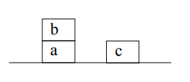

Deductive planning
It is a Planning strategy that uses first order logic as a way to find a path from the initial state to the final state.
Green formulation
We use fluets (properties) that hold in a given state s to describe the current situation and to describe actions we describe which fluets are true after we have execute them. Example: properties: on(b,a,S0) onTable(c,S0) clear(b,S0) clear(c,S0) actions: on(X,Y,S) and clear(X,S) -> (onTable(X,do(putOnTable(X),S))) and (clear(Y,do(putOnTable(X),S))) on(X,Y,S) and clear(X,S) and clear(Z,S) -> (on(X,Z,do(move(X,Z),S))) and (clear(Y,do(move(X,Z),S))) 
This method finds a proof of a formula containing a state variable, at the end of the planning the state variable will be instantiated to the plan to reach the objective. The proof is done by absurd on the action needed to reach the final state. Example: final state = on(b,c,s1) proof: ~on(b,c,S1) -> ~clear(c,S0) or ~clear(b,S0) or ~on(b,Y,S0) but: clear(c,S0) clear(b,S0) on(b,a,S0) (from the previous properties) -> contradiction, absurd
The frame problem
Since we assume that every fluets not actually stated is false, we need to explicitly list all fluets that do not change after the actions' execution. We need an axiom that keeps track of what does not change for each of our actions.
Kovalsky formulation
We have a set of predicates to describe states and actions:
- holds(rel, s/a) to describe all relations rel that are true in a given state s or made true by execution of an action
- poss(s) to indicate if a state s is possible
- pact(a,s) that indicate if an action an is executable on s
- poss(s) and pact(a, s) -> poss(do(a,s))
this limits the frame axioms needed to avoid the frame problem (just one for action)